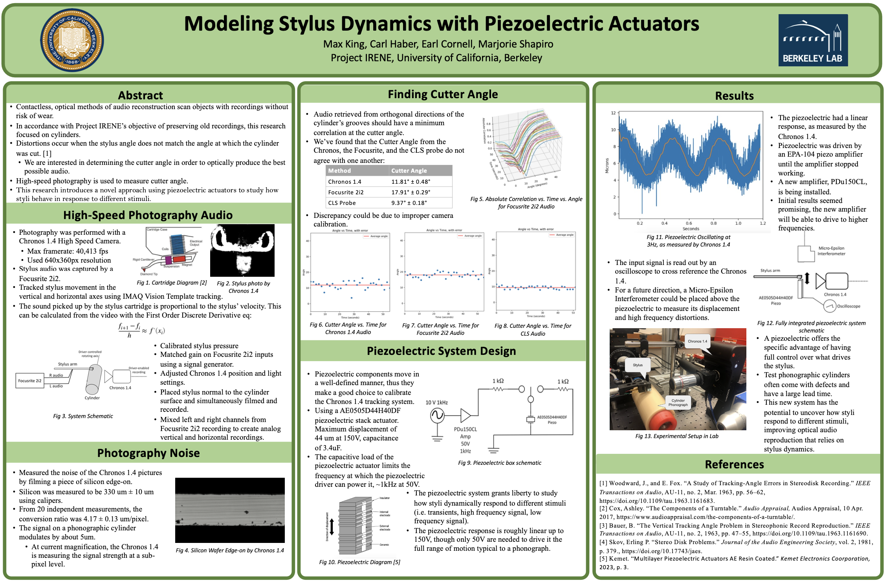
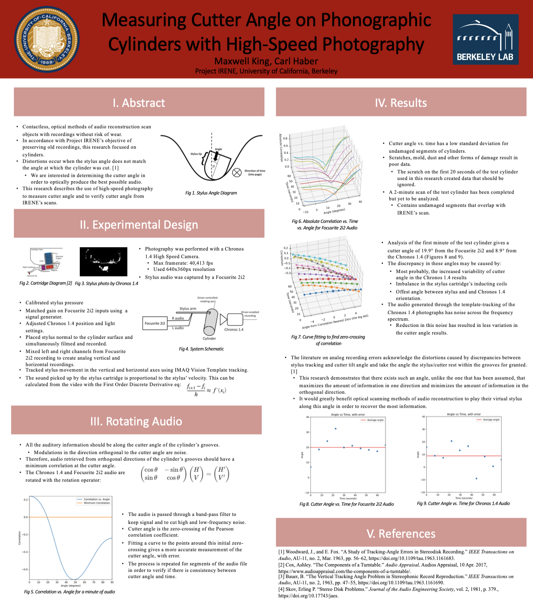
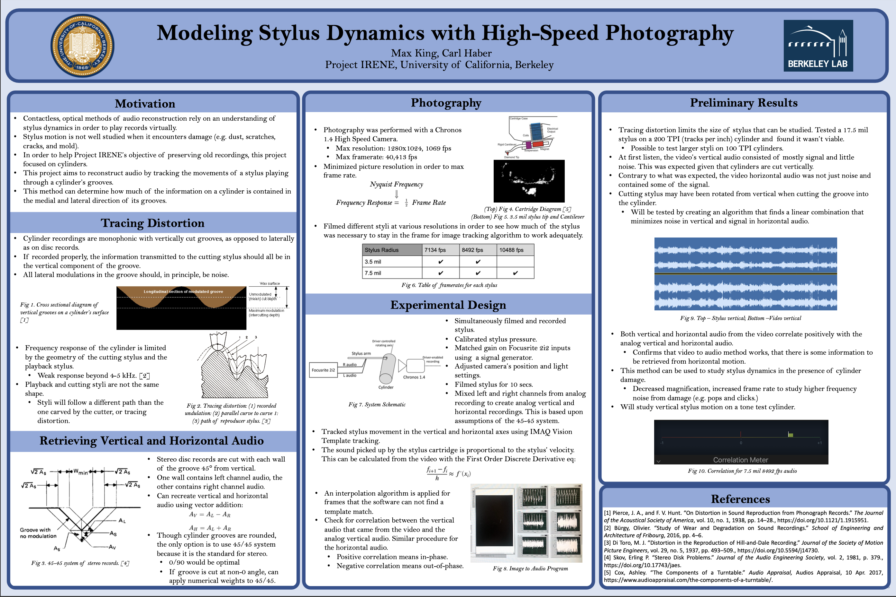

King, M., Haber, C., Cornell, E., Shjapiro, M. (2024)

My third poster for my research at Project IRENE, presented at the annual Berkeley Physics Undergraduate Research Scholars Poster Session, Berkeley, CA. Poster explores how photography can be used to reproduce audio from phonographic cylinders, and explains the use of a piezoelectric system used to study the dynamics of phonographic styli.
King, M. & Haber, C. (2023)

My second poster for my research at Project IRENE, presented at the Mathematical and Physical Science Scholars Summer Research Fair, Berkeley, CA. Poster explores the process of determining the angle at which cylindrical phonographs were cut using photography and an analog stereo stylus cartridge.
King, M. & Haber, C. (2023)

My first poster for my research at Project IRENE, presented at the annual Berkeley Physics Undergraduate Research Scholars Poster Session, Berkeley, CA. Poster illustrates the process of filming styli playing cylindrical records and turning the film into audio.